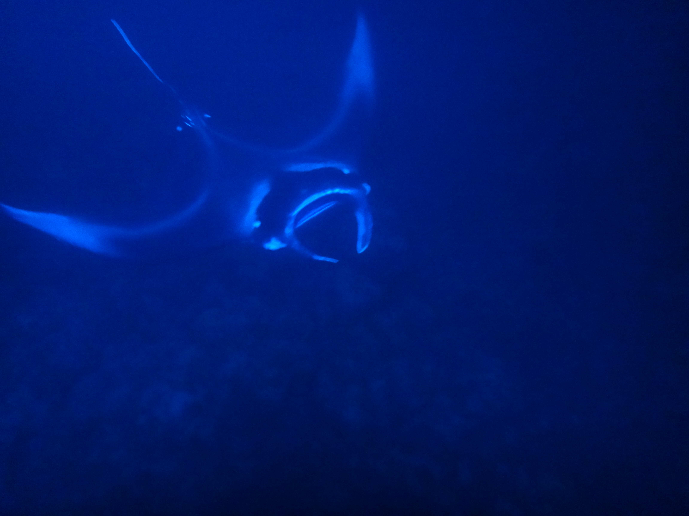

Hawaii 2016
Day 1
In 2016 I went on a trip to Hawaii with my family. We started the first
few days on the big island. We started by walking around the beach near
our resort. Later that first night we went out to snorkle with manta rays.
You have to wait until it gets dark because that's when they come closer to
shore in order to feed. It was very cool as they come so close to you that
you had to watch your feet so that you don't accidentally kick them as they swim by.

Day 2

Our second day was our first full day of the trip and we decided to drive
around the island and see all the sights. To start we went to Rainbow Falls
a nearly 80 foot waterfall located in the town of Hilo. We continued by going
to the Hawai'i Volcanoes National Park, home to the famous Mount Kilauea, one of
the most active volcanoes in the world. It was active while we were there too
and we could see some lava bubbling in the distance from the peak.

We finished the day out by going to the unique Black Sands Beach. The
unique sand color was made from cooled lava mixing with the sand. While we
were there we came across a couple sea turtles resting on the shore as well.

Day 3
The third day was an uneventful but still relaxing day sitting by the beach.
At night we drove a little ways out of town to look out at the stars. Since
there's an observatory on the island, light pollution is almost nonexistant
at night, allowing us to see far more stars than we can in St. Louis.
Day 4
On the fourth day, we left the big island to Oahu, home of Pearl Harbor and the
capital Honolulu. On the way to the airport we hiked up to some of the lava tubes,
giant caverns where lava once flowed long ago on its way to the ocean.

After getting settled on Oahu we spent the rest of the day looking at the beach near
our resort. It was a light day but welcome considering how much we were going to do
the following day.
Day 5
We started our first full day on Oahu by hiking the popular Diamond Head trail, a
trail that goes up the mountains near the coast. Because of its location the
views were breathtaking.

After we finished hiking we drove around the island, stopping at the many beaches,
food trucks, and little shops all along the coast. The island is so small that we
drove almost entirely around the island in the half a day we had.
Day 6
We only had one thing planned for the day: Pearl Harbor. When we were on the trip
there was a an event known as RIMPAC, which was a massive military training
involving several different nations navies run simulation battles amongst each other
out in the Pacific. Because of this the day we visited Pearl Harbor it was extremely
busy with ships coming in and out of the harbor itself and many different people from
other countries touring the museum as well.